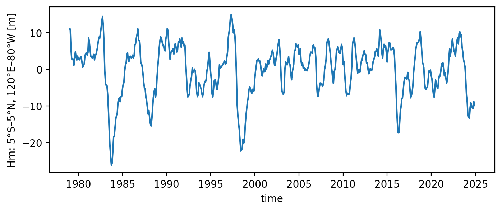

RO fitting#
This notebook covers both RO fitting with observation and climate simulation outputs
Contacts:
Sen Zhao (zhaos@hawaii.edu)
Soong-Ki Kim (soong-ki.kim@yale.edu)
[1]:
%config IPCompleter.greedy = True
%matplotlib inline
%config InlineBackend.figure_format='retina'
%load_ext autoreload
%autoreload 2
import warnings
warnings.filterwarnings("ignore")
import os
import sys
import numpy as np
import xarray as xr
import matplotlib.pyplot as plt
sys.path.append(os.path.abspath("../../"))
from pyCRO import RO_fitting, RO_solver, RO_analytic_std, RO_analytic_solver, RO_BWJ, func_mon_std, par_load
Fitting to the observation/reanalysis#
Load observation ENSO timeseries#
[2]:
# load observations
file_name = os.path.join(os.getcwd(), "../../data", "XRO_indices_oras5.nc")
xr_ds = xr.open_dataset(file_name)
T_oras5 = xr_ds['Nino34'][:] # Nino 3.4 since 1979-01-01
h_oras5 = xr_ds['WWV'][:] # WWV since 1979-01-01
time_oras5 = xr_ds['time'][:] # Days since 1979-01-01
T_oras5.plot(figsize=(8, 3))
h_oras5.plot(figsize=(8, 3))
[2]:
[<matplotlib.lines.Line2D at 0x156def4d0>]


Fit with type: linear RO with white addtive noise#
[3]:
# setting fitting options and print the fitted parameters
par_option_T = {"R": 1, "F1": 1, "b_T": 0, "c_T": 0, "d_T": 0}
par_option_h = {"F2": 1, "epsilon": 1, "b_h": 0}
par_option_noise = {"T": "white", "h": "white", "T_type": "additive"}
par_fitted_obs = RO_fitting(T_oras5, h_oras5, par_option_T, par_option_h, par_option_noise, method_fitting='MLE')
print(par_fitted_obs)
---------------------------------------------------------------------------------
Welcome to CRO Fitting! Your fitting setups:
---------------------------------------------------------------------------------
- Data time step is not given, defaulting to: dt = 1.0 months.
- Time series length: N = len(T)*dt = 552.0 months.
- Prescribed terms: {'R': 1, 'F1': 1, 'b_T': 0, 'c_T': 0, 'd_T': 0}.
{'F2': 1, 'epsilon': 1, 'b_h': 0}.
0 - Do not prescribe.
1 - Prescribe only the annual mean.
3 - Prescribe the annual mean and annual seasonality.
5 - Prescribe the annual mean, annual seasonality, and semi-annual seasonality.
- Noise options: {'T': 'white', 'h': 'white', 'T_type': 'additive'}.
- Fitting method for T and h main equations: MLE.
---------------------------------------------------------------------------------
All steps are successfully completed!
---------------------------------------------------------------------------------
{'R': [-0.07438596504472858], 'F1': [0.01932974715595375], 'F2': [1.2506555748093833], 'epsilon': [0.005116216007314801], 'b_T': [], 'c_T': [], 'd_T': [], 'b_h': [], 'sigma_T': [0.22231828117472308], 'sigma_h': [1.6043565470037402], 'B': [], 'm_T': [], 'm_h': [], 'n_T': [1], 'n_h': [1], 'n_g': [2]}
[ ]: